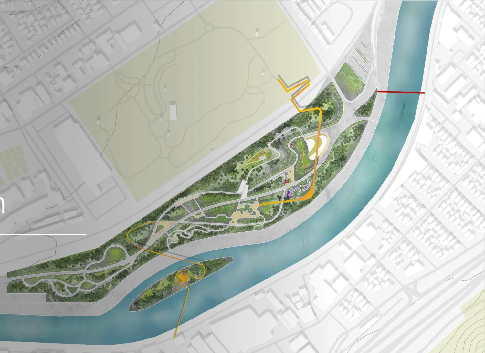
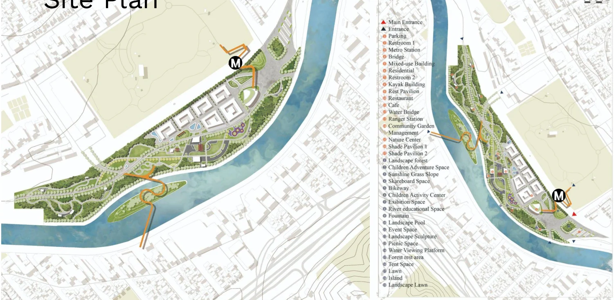
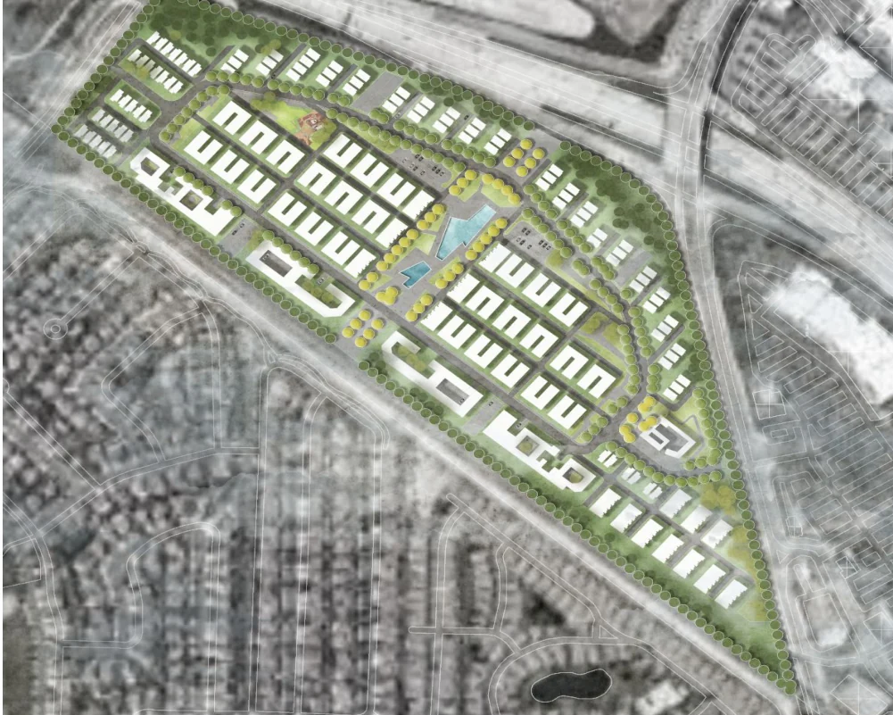
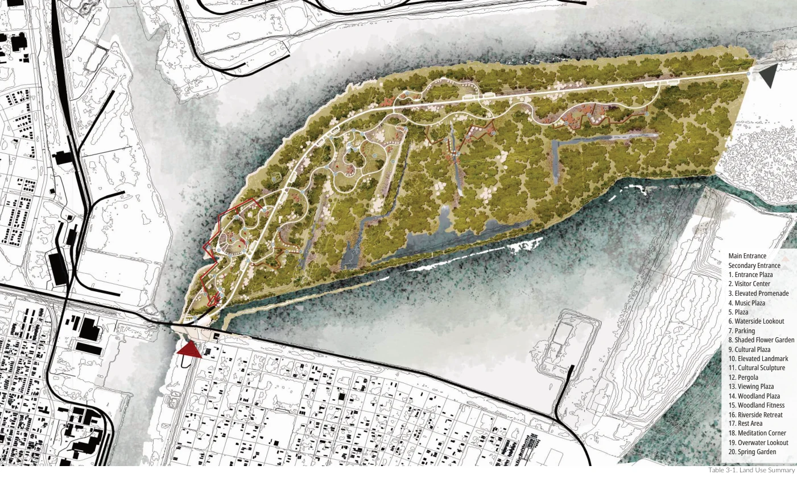
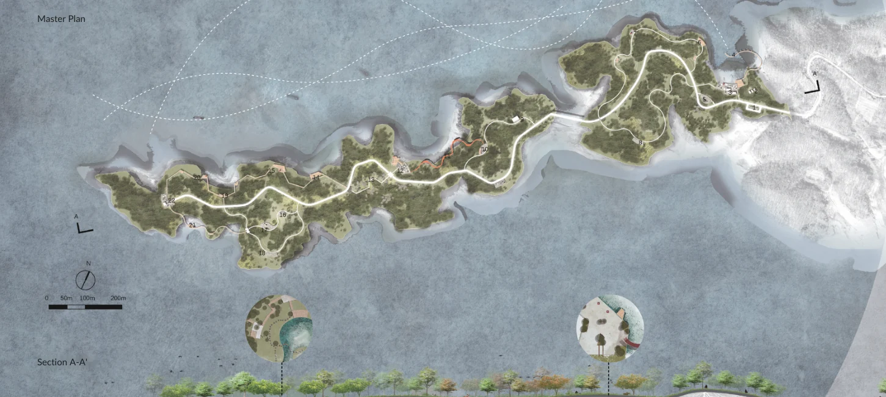

01 / MOBILITY
Transit access &
serviceability
Examining whether transit supports observed trips through access, connectivity, and schedule alignment, alongside micromobility and transit integration.
Explore doctoral researchOPEN TO ACADEMIC & RESEARCH OPPORTUNITIES
Ph.D. Candidate · University of Florida
I study how transportation systems serve people, how emerging mobility technologies are received, and how AI can support more equitable planning decisions.
Urban & regional planningTransportation, access, and public policy
Electrical & computer engineeringMachine learning and computational methods
Landscape & urban designPublic space, ecology, and connection
01 RESEARCH
My work connects transportation planning, computational methods, and the everyday experience of cities.
Examining whether transit supports observed trips through access, connectivity, and schedule alignment, alongside micromobility and transit integration.
Explore doctoral researchStudying human–AI collaboration in planning, autonomous vehicle acceptance, and the role of machine learning and generative AI in planning decisions.
Bringing together park accessibility, community safety, and collaborative research on climate exposure, transportation resilience, and disaster recovery.
Explore research experienceAdvisor
Prof. Zhong-Ren Peng
When does transit truly serve a trip?
My dissertation brings trip-level serviceability, user perceptions, and AI-enabled planning into a shared research agenda for public transportation.
02 SCHOLARSHIP
Transportation, urban planning AI, equitable access, and resilience. Published work and manuscripts under review are clearly distinguished.
Full Google Scholar profile19 works · Academic record updated October 2026
Submitted to Journal of Transport Geography
Transport Policy, 104391
Journal of the American Planning Association, 1–16
Sustainability, 17(24), 11021
Submitted to Cities
Journal of Urban Regional Planning, 16(1), 215–228
Proceedings of the 7th International Conference on Economic Management and Green Development, ICEMGD 2023. Applied Economics and Policy Studies. Springer, Singapore
Florida Department of Transportation
Submitted to Nature Computational Science
Submitted to Nature Cities
Submitted to Sustainable Cities and Society
Submitted to Journal of Planning Education and Research
Submitted to Transportation Research Part D: Transport and Environment
Submitted to Transport Policy
Submitted to Travel Behavior and Society
Submitted to International Journal of Disaster Risk Reduction
Submitted to Urban Climate
Submitted to Journal of the American Planning Association
Submitted to Risk Analysis
No matching publications. Try a different term or select “All.”
Review status and bibliographic information reflect the October 2026 CV. Manuscripts under review are not published articles.
03 RESEARCH EXPERIENCE
Selected roles in funded projects. Funding amounts identify total project awards, not individual grants secured.
Arnold Ventures · $91,400 project award
Dashboard work in this phase was a proposal and analytical framework, not a deployed or validated system.
Florida Department of Transportation · $388,000 project award
Ajman University Research Grant
Florida Department of Transportation · $150,000 project award
USDA NIFA / Multistate Project #PEN04623 / NICHD
USDA NIFA / Multistate Project #PEN04623 / NICHD
04 TEACHING
My teaching experience spans graduate planning courses and undergraduate design studios, supported by training in planning, engineering, and landscape architecture.
TEACHING INTERESTS
Teaching Assistant · University of Florida
Teaching Assistant · University of Florida
Teaching Assistant · Northeast Forestry University
05 DESIGN PORTFOLIO
Selected academic design projects connecting housing, mobility, public space, and ecological systems. Open a project to explore the design approach and original portfolio.
Taylor Yard G2 Riverfront Revitalization
Los Angeles, California
Mixed-Use Riverfront Redevelopment
Los Angeles, California
Mixed-Use Affordable Housing Master Plan
Oxnard, California
Adaptive Shoreline Design
Mississippi River Delta
Ecological Landscape Design
Songhua Lake, China
06 SERVICE & ENGAGEMENT
Building shared resources, communicating research, and creating opportunities for community participation.
KNOWLEDGE INFRASTRUCTURE
Integrated planning knowledge and resources, particularly Urban Planning AI, and developed the project website.
Visit the project siteACADEMIC COMMUNICATION
Designed program flyers and brochures and developed a website for the master’s degree and graduate certificate in Urban Analytics.
Visit the project siteShared iAdapt research with undergraduate communities and introduced UF’s Urban Analytics master’s degree and graduate certificate.
Distributed SaferEast survey recruitment brochures, introduced the research, and encouraged participation in the community retail parking lot safety survey.
Co-hosting activities at the University of Florida, with the 2027 event listed as upcoming in the CV.
Member, iAdapt · University of Florida
Washington, D.C.
Upcoming presentations as listed in the October 2026 CV.
Pittsburgh, Pennsylvania
Data-Driven Transit Network Design Through Hierarchical Reinforcement Learning: A Multi-Agent Framework for Route and Station Planning.
Minneapolis, Minnesota
Evaluating Transit Service Gaps Through Empirical Travel Patterns from Downtown Tampa, Florida.
07 ABOUT
I am a Ph.D. candidate in Urban and Regional Planning at the University of Florida, advised by Prof. Zhong-Ren Peng. My work bridges urban analytics, transportation, and spatial design.
University of Florida
Advisor: Prof. Zhong-Ren PengUniversity of Florida
University of Southern California
Northeast Forestry University
SELECTED RECOGNITION · 2025
AI and Cities: An International Forum for Innovation and Collaboration
College of Design, Construction and PlanningPython · SPSS · ArcGIS Pro · PTV VISUM
Geospatial analysis · Data visualization · Machine learning · Natural language processing
AutoCAD · SketchUp · Lumion · Photoshop · Illustrator · InDesign
English · Mandarin (native)
University of Florida
Advisor: Dr. Zhong-Ren Peng
Advisor: Dr. Guangqing Chi
New York University
Advisor: Dr. Stanislav Sobolevsky
Shanghai Tongji Urban Planning & Design Institute
LET’S CONNECT
I welcome conversations about academic and research opportunities in urban and regional planning, transportation, and urban analytics.
ACADEMIC DESIGN PROPOSAL · 04/2022
Taylor Yard G2 Riverfront Revitalization
Los Angeles, California

ACADEMIC DESIGN PROPOSAL · 05/2022
Mixed-Use Riverfront Redevelopment
Los Angeles, California

ACADEMIC DESIGN PROPOSAL · 05/2021
Mixed-Use Affordable Housing Master Plan
Oxnard, California

ACADEMIC DESIGN PROPOSAL · 06/2020
Adaptive Shoreline Design
Mississippi River Delta

ACADEMIC DESIGN PROPOSAL · 11/2019
Ecological Landscape Design
Songhua Lake, China
